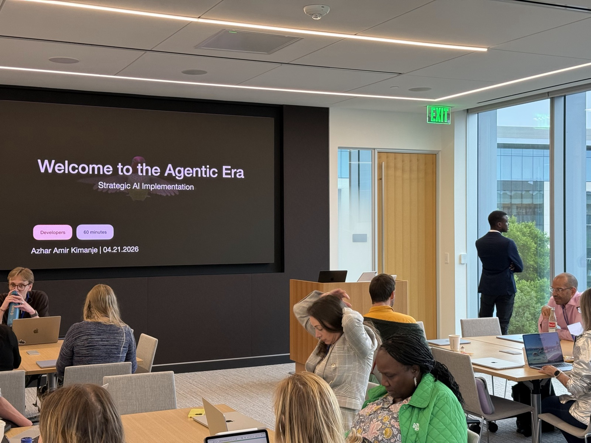

About
Simplicity is Sophistication.
I’m an XR and AI engineer. Good technology feels intuitive and makes people productive.
At Exonicus, that means interoperability: making complex systems work as one. I lead interoperability engineering for real-time XR trauma simulation, connecting physiology engines, virtual patients and military training standards (HLA, JETS, MOHSES) so separate systems share patient data live.
At AVELA Non-profit, it means putting intelligence on the device. I direct AI × XR Labs, where my research focuses on fine-tuning small language models with on-device machine learning frameworks.
At Sablesync, my own studio, it means access. It’s where I pursue my passion for spatial computing that anyone can use.
The method is the same in all three: start from the hard constraint, harness machine intelligence for rapid prototyping, and ship.
The communities I belong to follow the same threads. Through Exonicus, I’m a member of the Medical Modeling & Simulation Community of the Simulation Interoperability Standards Organization (SISO), for interoperability. Through AVELA, I work with Apple’s Community Education Initiative (CEI) on AI in education. Through Sablesync, I’m a member of the Alliance for OpenUSD (AOUSD), for open 3D standards.
Human-Computer Interaction, made simple.
Education
History.
-
Seattle Pacific University
Bachelor of Arts, Computer Science and Engineering
Founded the NSBE chapter, led the software engineering capstone, and won the 1st Place Top Poster Presentation Award.
-
Charles Wright Academy
AP Calculus, AP Physics, AP Government
-
Curtis Senior High School
AP Calculus, AP Physics, AP Government
-
King’s College Budo
Physics, Mathematics, Technical Drawing
Skills
Tools I reach for.
Programming languages
- C# · 5 years
- C++
- C
- Python
- SQL
- Java
Engines and frameworks
- Unity · DOTS, NavMesh, Unity AI
- Unreal Engine
- .NET
- OpenXR
- RealityKit and ARKit
- ARCore
- three.js
- NVIDIA Omniverse
AI and vision
- Apple MLX · fine-tuning
- Computer vision
- Deep learning
- Gaussian splatting
- LLMs and NLP
Simulation and delivery
- HLA, JETS and MOHSES
- Lens Studio and Vuforia
- Autodesk Revit
- CI/CD with GitHub
- Jira and Confluence
Beyond the work
Languages, soccer, and writing.
Languages
- Luganda · native
- English · native
- Spanish · elementary
Soccer
- Tacoma Stars Reserves player · Sept 2023 – Apr 2024
- Also the inspiration for FUFA